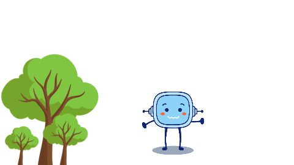

Hemos terminado nuestro proyecto en Scratch y hemos conseguido nuestro reto, realizar una historia animada.
Es momento de reflexionar sobre lo que hemos aprendido. Seguro que sabemos presentarnos mejor a los demás.
También debemos valorar la utilidad que tiene trabajar con Scratch y compartir nuestros proyectos.
Por último estaría bien que pensaras qué cosas no han ido bien y cómo mejorarlas.
3. ¿Qué has conseguido?
%7B%22title%22%3A%22R%FAbrica%22%2C%22categories%22%3A%5B%22He%20insertado%20fondos%20en%20el%20proyecto.%22%2C%22He%20dise%F1ado%20un%20fondo%20degradado%22%2C%22He%20insertado%20personajes%20y%20objetos.%22%2C%22He%20utilizado%20varios%20disfraces.%22%2C%22Conozco%20las%20posibilidades%20del%20sonido%20en%20Scratch.%22%2C%22S%E9%20clasificar%20los%20bloques%20de%20Scratch%22%2C%22He%20programado%20correctamente%20los%20movimientos%20de%20mi%20proyecto.%22%2C%22S%E9%20programar%20los%20cambios%20de%20apariencia.%22%2C%22Mi%20presentaci%F3n%20transmite%20lo%20que%20quer%EDa.%22%2C%22S%E9%20compartir%20mi%20proyecto%20en%20la%20comunidad%20online.%22%5D%2C%22scores%22%3A%5B%22Excelente%22%2C%22Satisfactorio%22%2C%22Mejorable%22%2C%22Insuficiente%22%5D%2C%22descriptions%22%3A%5B%5B%7B%22text%22%3A%22Lo%20he%20hecho%20de%20manera%20aut%F3noma%22%2C%22weight%22%3A%221%22%7D%2C%7B%22text%22%3A%22Lo%20he%20hecho%20pero%20he%20necesitado%20ayuda%22%2C%22weight%22%3A%220.75%22%7D%2C%7B%22text%22%3A%22Lo%20he%20hecho%2C%20pero%20he%20necesitado%20una%20gu%EDa%20continua%22%2C%22weight%22%3A%220.5%22%7D%2C%7B%22text%22%3A%22No%20he%20podido%20hacerlo%22%2C%22weight%22%3A%220.25%22%7D%5D%2C%5B%7B%22text%22%3A%22Lo%20he%20hecho%20de%20manera%20aut%F3noma%22%2C%22weight%22%3A%221%22%7D%2C%7B%22text%22%3A%22Lo%20he%20hecho%20pero%20he%20necesitado%20ayuda%22%2C%22weight%22%3A%220.75%22%7D%2C%7B%22text%22%3A%22Lo%20he%20hecho%2C%20pero%20he%20necesitado%20una%20gu%EDa%20continua%22%2C%22weight%22%3A%220.5%22%7D%2C%7B%22text%22%3A%22No%20he%20podido%20hacerlo%22%2C%22weight%22%3A%220.25%22%7D%5D%2C%5B%7B%22text%22%3A%22Lo%20he%20hecho%20de%20manera%20aut%F3noma%22%2C%22weight%22%3A%221%22%7D%2C%7B%22text%22%3A%22Lo%20he%20hecho%20pero%20he%20necesitado%20ayuda%22%2C%22weight%22%3A%220.75%22%7D%2C%7B%22text%22%3A%22Lo%20he%20hecho%2C%20pero%20he%20necesitado%20una%20gu%EDa%20continua%22%2C%22weight%22%3A%220.5%22%7D%2C%7B%22text%22%3A%22No%20he%20podido%20hacerlo%22%2C%22weight%22%3A%220.25%22%7D%5D%2C%5B%7B%22text%22%3A%22Ser%EDa%20capaz%20de%20explicarlo%22%2C%22weight%22%3A%221%22%7D%2C%7B%22text%22%3A%22Lo%20he%20entendido%20y%20sabr%EDa%20explicarlo%20con%20ayuda%22%2C%22weight%22%3A%220.75%22%7D%2C%7B%22text%22%3A%22Lo%20he%20entendido%20pero%20no%20sabr%EDa%20explicarlo%22%2C%22weight%22%3A%220.5%22%7D%2C%7B%22text%22%3A%22No%20lo%20he%20entendido%22%2C%22weight%22%3A%220.25%22%7D%5D%2C%5B%7B%22text%22%3A%22Ser%EDa%20capaz%20de%20explicarlo%22%2C%22weight%22%3A%221%22%7D%2C%7B%22text%22%3A%22Lo%20he%20entendido%20y%20sabr%EDa%20explicarlo%20con%20ayuda%22%2C%22weight%22%3A%220.75%22%7D%2C%7B%22text%22%3A%22Lo%20he%20entendido%20pero%20no%20sabr%EDa%20explicarlo%22%2C%22weight%22%3A%220.5%22%7D%2C%7B%22text%22%3A%22No%20lo%20he%20entendido%22%2C%22weight%22%3A%220.25%22%7D%5D%2C%5B%7B%22text%22%3A%22Ser%EDa%20capaz%20de%20explicarlo%22%2C%22weight%22%3A%221%22%7D%2C%7B%22text%22%3A%22Lo%20he%20entendido%20y%20sabr%EDa%20explicarlo%20con%20ayuda%22%2C%22weight%22%3A%220.75%22%7D%2C%7B%22text%22%3A%22Lo%20he%20entendido%20pero%20no%20sabr%EDa%20explicarlo%22%2C%22weight%22%3A%220.5%22%7D%2C%7B%22text%22%3A%22No%20lo%20he%20entendido%22%2C%22weight%22%3A%220.25%22%7D%5D%2C%5B%7B%22text%22%3A%22Ser%EDa%20capaz%20de%20explicarlo%22%2C%22weight%22%3A%221%22%7D%2C%7B%22text%22%3A%22Lo%20he%20entendido%20y%20sabr%EDa%20explicarlo%20con%20ayuda%22%2C%22weight%22%3A%220.75%22%7D%2C%7B%22text%22%3A%22Lo%20he%20hecho%2C%20pero%20he%20necesitado%20una%20gu%EDa%20continua%22%2C%22weight%22%3A%220.5%22%7D%2C%7B%22text%22%3A%22No%20lo%20he%20entendido%22%2C%22weight%22%3A%220.25%22%7D%5D%2C%5B%7B%22text%22%3A%22Lo%20he%20hecho%20de%20manera%20aut%F3noma%22%2C%22weight%22%3A%221%22%7D%2C%7B%22text%22%3A%22Lo%20he%20hecho%20pero%20he%20necesitado%20ayuda%22%2C%22weight%22%3A%220.75%22%7D%2C%7B%22text%22%3A%22Lo%20he%20hecho%2C%20pero%20he%20necesitado%20una%20gu%EDa%20continua%22%2C%22weight%22%3A%220.5%22%7D%2C%7B%22text%22%3A%22No%20he%20podido%20hacerlo%22%2C%22weight%22%3A%220.25%22%7D%5D%2C%5B%7B%22text%22%3A%22Lo%20he%20hecho%20de%20manera%20aut%F3noma%22%2C%22weight%22%3A%221%22%7D%2C%7B%22text%22%3A%22Lo%20he%20hecho%20pero%20he%20necesitado%20ayuda%22%2C%22weight%22%3A%220.75%22%7D%2C%7B%22text%22%3A%22Lo%20he%20hecho%2C%20pero%20he%20necesitado%20una%20gu%EDa%20continua%22%2C%22weight%22%3A%22%22%7D%2C%7B%22text%22%3A%22No%20he%20podido%20hacerlo%22%2C%22weight%22%3A%220.25%22%7D%5D%2C%5B%7B%22text%22%3A%22Ser%EDa%20capaz%20de%20explicarlo%22%2C%22weight%22%3A%221%22%7D%2C%7B%22text%22%3A%22Lo%20he%20entendido%20y%20sabr%EDa%20explicarlo%20con%20ayuda%22%2C%22weight%22%3A%220.75%22%7D%2C%7B%22text%22%3A%22Lo%20he%20entendido%20pero%20no%20sabr%EDa%20explicarlo%22%2C%22weight%22%3A%220.5%22%7D%2C%7B%22text%22%3A%22No%20lo%20he%20entendido%22%2C%22weight%22%3A%220.25%22%7D%5D%5D%2C%22i18n%22%3A%7B%22activity%22%3A%22Actividad%22%2C%22name%22%3A%22Nombre%22%2C%22date%22%3A%22Fecha%22%2C%22score%22%3A%22Puntuaci%F3n%22%2C%22notes%22%3A%22Notas%22%2C%22reset%22%3A%22Reiniciar%22%2C%22print%22%3A%22Imprimir%22%2C%22apply%22%3A%22Aplicar%22%2C%22newWindow%22%3A%22Ventana%20nueva%22%7D%7D
- Actividad
- Nombre
- Fecha
- Puntuación
- Notas
- Reiniciar
- Imprimir
- Aplicar
- Ventana nueva
| Excelente | Satisfactorio | Mejorable | Insuficiente | |
|---|---|---|---|---|
| He insertado fondos en el proyecto. | Lo he hecho de manera autónoma (1) | Lo he hecho pero he necesitado ayuda (0.75) | Lo he hecho, pero he necesitado una guía continua (0.5) | No he podido hacerlo (0.25) |
| He diseñado un fondo degradado | Lo he hecho de manera autónoma (1) | Lo he hecho pero he necesitado ayuda (0.75) | Lo he hecho, pero he necesitado una guía continua (0.5) | No he podido hacerlo (0.25) |
| He insertado personajes y objetos. | Lo he hecho de manera autónoma (1) | Lo he hecho pero he necesitado ayuda (0.75) | Lo he hecho, pero he necesitado una guía continua (0.5) | No he podido hacerlo (0.25) |
| He utilizado varios disfraces. | Sería capaz de explicarlo (1) | Lo he entendido y sabría explicarlo con ayuda (0.75) | Lo he entendido pero no sabría explicarlo (0.5) | No lo he entendido (0.25) |
| Conozco las posibilidades del sonido en Scratch. | Sería capaz de explicarlo (1) | Lo he entendido y sabría explicarlo con ayuda (0.75) | Lo he entendido pero no sabría explicarlo (0.5) | No lo he entendido (0.25) |
| Sé clasificar los bloques de Scratch | Sería capaz de explicarlo (1) | Lo he entendido y sabría explicarlo con ayuda (0.75) | Lo he entendido pero no sabría explicarlo (0.5) | No lo he entendido (0.25) |
| He programado correctamente los movimientos de mi proyecto. | Sería capaz de explicarlo (1) | Lo he entendido y sabría explicarlo con ayuda (0.75) | Lo he hecho, pero he necesitado una guía continua (0.5) | No lo he entendido (0.25) |
| Sé programar los cambios de apariencia. | Lo he hecho de manera autónoma (1) | Lo he hecho pero he necesitado ayuda (0.75) | Lo he hecho, pero he necesitado una guía continua (0.5) | No he podido hacerlo (0.25) |
| Mi presentación transmite lo que quería. | Lo he hecho de manera autónoma (1) | Lo he hecho pero he necesitado ayuda (0.75) | Lo he hecho, pero he necesitado una guía continua | No he podido hacerlo (0.25) |
| Sé compartir mi proyecto en la comunidad online. | Sería capaz de explicarlo (1) | Lo he entendido y sabría explicarlo con ayuda (0.75) | Lo he entendido pero no sabría explicarlo (0.5) | No lo he entendido (0.25) |
